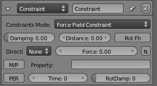

Constraints Actuator¶
The Constraints Actuator adds a constraint to the location or orientation of an object. This is useful for controlling the physics of the object in-game.
Properties¶
- Constraint Mode
- Constraint type to use. Each is described below.
Force Field Constraint¶
Create a force field buffer zone along one axis of the object.

{kind=link}
Force Field Constraint.
- Damping
- Damping factor of the Fh spring force.
- Distance
- Height of Fh area.
- Rot Fh
- Make game object axis parallel to the normal of trigger object.
- Direction
- Axis in which to create force field (can be + or -, or None).
- Force
- Force value to be used.
- N
- When on, use a horizontal spring force on slopes.
- M/P
- Trigger on another Object will be either Material (M) or Property (P).
- Property
- Property/Material that triggers the Force Field constraint (blank for all Properties/Materials).
- Per
- Persistence button When on, force field constraint always looks at Property/Material; when off, turns itself off if it cannot find the Property/Material.
- Time
- Number of frames for which constraint remains active.
- RotDamp
- Damping factor for rotation.
Orientation Constraint¶
Constrain the specified axis in the Game to a specified direction in the World axis.

Orientation Constraint.
- Direction
- Game axis to be modified (X, Y, Z or none).
- Damping
- Delay (frames) of the constraint response.
- Time
- Time (frames) for the constraint to remain active.
- Reference Direction
- Reference direction (global coordinates) for the specified game axis.
- Min Angle
- Minimum angle for the axis modification.
- Max Angle
- Maximum angle for the axis modification.
Distance Constraint¶
Maintain the distance the Game Object has to be from a surface.

Distance Constraint.
- Direction
- Axis Direction (X, Y, Z, -X, -Y, -Z, or None).
- L
- If on, use local axis (otherwise use World axis).
- N
- If on, orient the Game Object axis with the mesh normal.
- Range
- Maximum length of ray used to check for Material/Property on another game object.
- Force Distance
- Distance to be maintained between object and the Material/Property that triggers the Distance Constraint.
- Damping
- Delay (frames) of the constraint response.
- M/P
- Trigger on another Object will be either Material (M) or Property (P).
- Property
- Property/Material that triggers the Force Field constraint (blank for all Properties/Materials).
- Per
- Persistence button: When on, force field constraint always looks at Property/Material; when off, turns itself off if it cannot find the Property/Material.
- Time
- Number of frames for which constraint remains active.
- Rotation Damping
- Damping factor for rotation.
Location Constraint¶
Limit the position of the Game Object within one World Axis direction. To limit movement within an area or volume, use two or three constraints.

Location Constraint.
- Limit
- Axis in which to apply limits (LocX, LocY, LocZ or none).
- Min
- Minimum limit in specified axis (Blender Units).
- Max
- Maximum limit in specified axis (Blender Units).
- Damping
- Delay (frames) of the constraint.